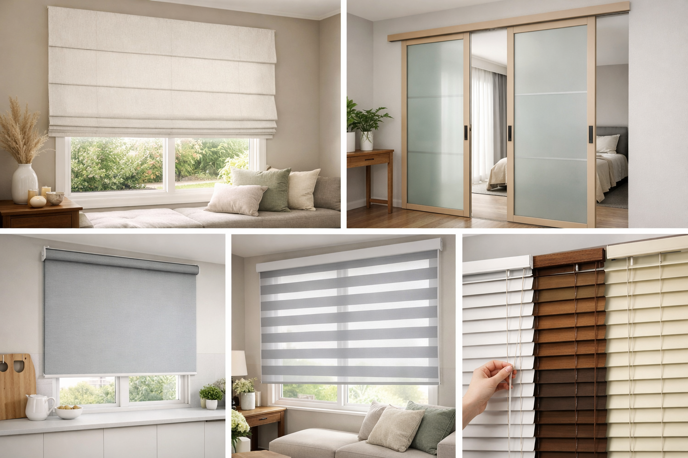
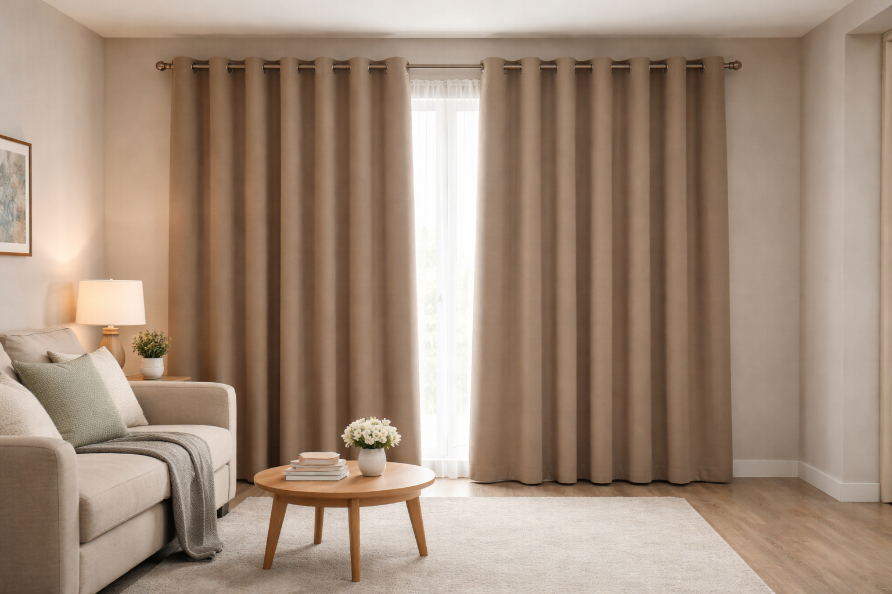
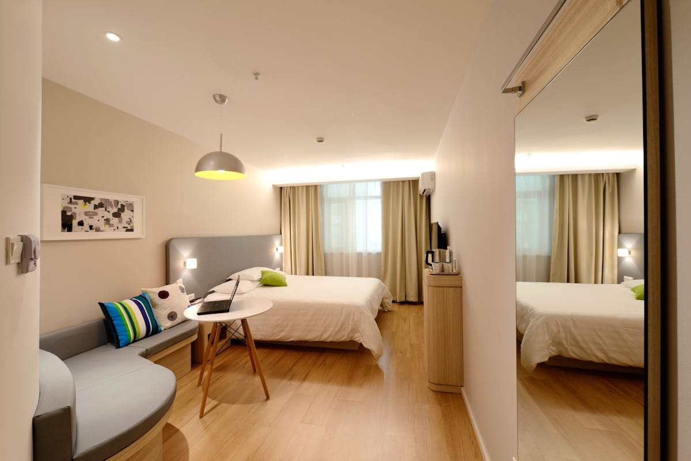
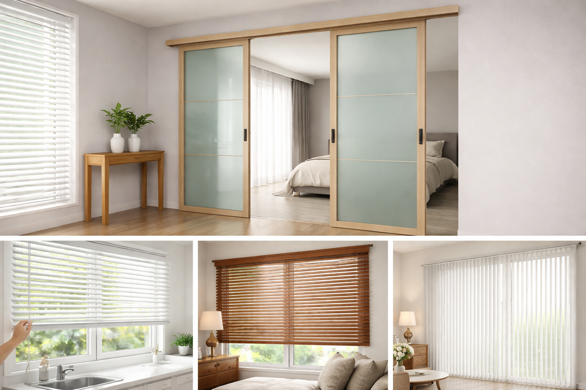
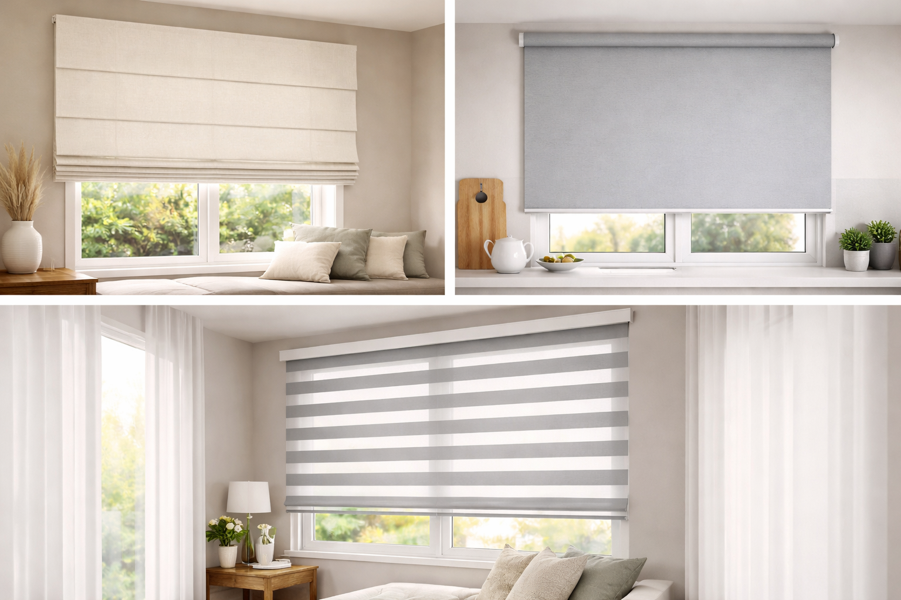

如果你本來只是想查「窗簾由來」，那你很可能最後會發現：真正重要的不是歷史本身，而是窗簾一路演變下來，留下哪些功能，現在又該怎麼用在自己家裡。
一、窗簾的起源：最早其實是為了遮陽、擋風與保有隱私
窗簾最早並不是裝飾品，而是生活工具。古代人會用簡單的布料、麻布、皮革或厚織物遮住窗戶與出入口，主要目的是阻擋陽光、冷風、灰塵，並讓室內保有基本隱私。
在古埃及、古羅馬等早期文明中，這些遮蔽物的概念已經存在，只是還不像今天這樣有明確分類。當時重點不在好不好看，而在能不能改善居住舒適度。
- 遮陽，減少強烈日照直射
- 擋風、防塵，讓室內更穩定
- 保護隱私，避免外部視線直接穿透

這也是窗簾到今天還重要的原因
因為它從誕生開始，就是在解決住得舒不舒服這件事。現在多了美感、設計感和智能控制，但核心其實沒變：讓空間更好住。
二、中世紀到文藝復興時期：窗簾開始成為身份與品味象徵
到了中世紀與後來的歐洲宮廷時期，窗簾不再只是實用品，也開始變成地位與審美的延伸。尤其在貴族、城堡、宮殿等空間裡，窗簾會採用較厚重、較華麗的材質，例如絲絨、刺繡布料、金色流蘇與層層垂墜設計。
這時候的窗簾已經明顯兼具兩個角色：一方面改善保暖與遮蔽，另一方面也成為室內裝飾的重要主角。


三、工業革命後：窗簾真正走進一般家庭
18 到 19 世紀工業革命之後，紡織技術提升、布料大量生產，窗簾不再只是上流階級才有的配置。因為成本下降、款式增多，更多一般家庭也開始使用窗簾來改善居住環境。
這時候窗簾的設計也愈來愈多樣，不只考慮遮蔽，還開始有摺景、綁帶、花布與不同層次感的做法。窗簾逐漸從單純「有沒有」的問題，變成「怎麼搭」的問題。

四、現代窗簾：機能與美學正式結合
到了現代，窗簾已經不是單一型態，而是依照不同空間需求衍生出各式各樣的系統。現在常見的就包含：遮光布簾、捲簾、調光簾、羅馬簾、百葉、蜂巢簾，甚至智能電動窗簾。
現代人選窗簾，通常同時在意以下幾件事：
- 遮光效果夠不夠
- 能不能隔熱、節能
- 隱私保護好不好
- 清潔與操作方不方便
- 整體風格是否跟空間一致
所以現在的窗簾，本質上已經是「機能型家居設計」，而不是單純布料掛上去而已。

五、窗簾演變總整理
| 時代 | 主要功能 | 代表特色 |
|---|---|---|
| 古代 | 遮陽、擋風、防塵、隱私 | 簡單布料與實用為主 |
| 中世紀 / 文藝復興 | 保暖、遮蔽、彰顯身分 | 厚重華麗、裝飾性提高 |
| 工業革命後 | 普及化家居用品 | 布料量產、更多家庭可使用 |
| 現代 | 機能 + 美感 + 系統化設計 | 遮光、隔熱、調光、智能化 |
六、為什麼現代家庭還是一定會需要窗簾？
很簡單，因為窗簾不是「有裝比較好看」而已，而是會直接影響每天的生活品質。
- 改善睡眠：臥室如果太亮，高遮光窗簾差非常多。
- 降低西曬熱度：大片落地窗、朝西空間尤其明顯。
- 增加隱私：一樓、對外窗、鄰棟距離近特別需要。
- 提升空間完成度：窗簾面積大，常常決定空間看起來是否高級、柔和、有層次。
也就是說，窗簾不只是裝飾，而是兼顧舒適、節能、隱私與風格的關鍵項目。
七、結語：窗簾，是家的最後一道溫度
從古代一塊單純的遮蔽物，到今天發展成各種機能窗飾系統，窗簾的歷史其實就是人類追求更好生活品質的縮影。
如果說牆面、地板、家具是空間的骨架，那窗簾往往就是讓這個家真正變得柔和、完整、有溫度的最後一道收尾。
所以當你在挑窗簾時，真的不用只想「哪個顏色好看」。更重要的是：這個空間需要解決什麼問題？只要方向抓對，窗簾不只是家飾，而會是很值得的投資。
想知道你家適合哪一種窗簾？
直接提供空間照片、窗戶位置或需求，布拉格窗簾可協助你評估遮光、隔熱、隱私與整體風格，並安排免費到府丈量估價。